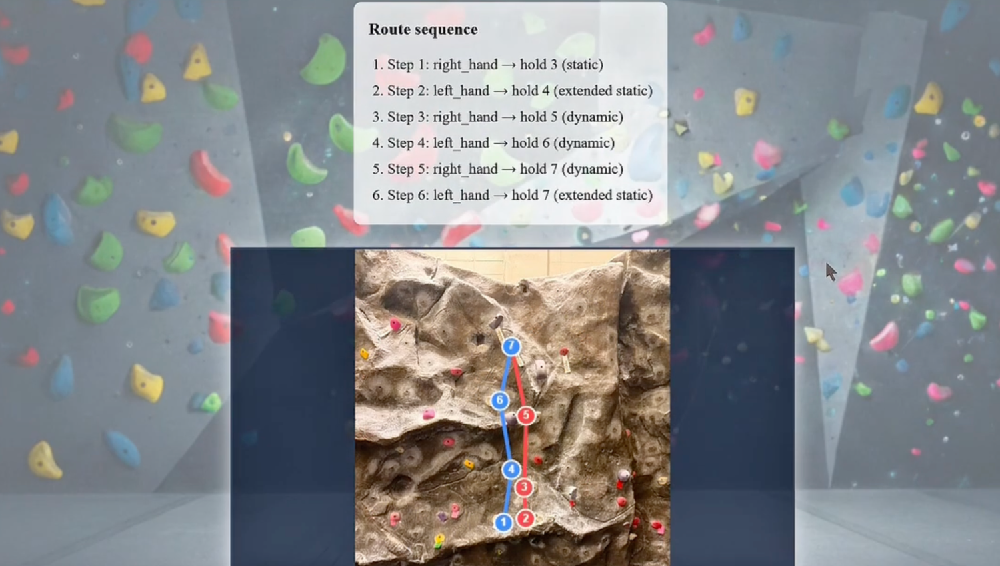

Ascend: Route Optimization for Climbers
Hacklytics 2026 | Graph Algorithms & Full-Stack Engineering
Project Overview
Ascend is a full-stack route-analysis platform that helps climbers determine the most efficient and physically feasible path up a rock wall. Users upload a wall image, select holds, and input personal metrics such as height, arm span, and experience level. The system computes a personalized route using graph-based optimization techniques.
Technical Architecture
- Frontend: React + Vite interface for uploading wall images, selecting holds, and entering climber metrics.
- Backend: FastAPI server managing validation, structured communication, and database interactions.
- Database: PostgreSQL with SQLAlchemy ORM for scalable user and route storage.
- Optimization Engine: Python-based graph engine using NetworkX to compute weighted routes via A* search.


Graph Modeling Approach
Each climbing hold is modeled as a node in a graph, with edges representing feasible movements. Edge weights are calculated using Euclidean distance, hold type, reach constraints, and difficulty modeling. Unlike traditional shortest-path implementations, Ascend tracks left and right hand states to simulate realistic climbing transitions.
Engineering Challenges
- Abstracting complex human biomechanics into computational constraints.
- Managing schema conflicts during backend integration and Git merges.
- Balancing model realism with computational efficiency under hackathon time constraints.
Outcomes
Ascend was successfully developed during Hacklytics 2026 as a fully functional prototype. The model was tested on a real climb at the CRC, validating our graph-based route modeling approach. The project demonstrates how physical movement problems can be translated into intelligent optimization systems.